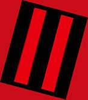

Madagaskar?
(GM Sorbák, vypráví Vlado Hromada, 25.6.2004 sepsal Spajdr)
Vzhùru dolù
Pøátelé mi zavolali do Káhiry, ¾e máme práci. Na Madagaskaru.
Na Madagaskaru? To se v¹ichni zbláznili?
Tak jsem tedy nasedl v Káhiøe. Znáte to: klimatizovaná krabice v dopravním letadle, pùvodnì urèená na dopravu parazvíøat. Co¾ jsme zøejmì právì my.
Nemám to rád, jenom¾e brát deck do letadla je pøíli¹ riskantní. Nemluvì o drátech tìch ostatních.
"V¾¾¾uuuum. Buch, chrchly, chrchly, iiiiik."
Chvilka ticha... hodina ticha, uz by tu nìkdo mìl být, ne?
"Zzzzz¾."
Skvìlé, tak¾e sedíme v krabici bez svìtel a klimatizace.
Honem ven, nìco je naprosto ¹patnì a já tady sedìt navìky nebudu.
"Buch, buch, buch."
No jistì, "samurajové". Jsem vzdy øíkal, ¾e jsou to plechové popelnice, ale dìlat takový hluk snad asi opravdu nemuseli.
"Daka, daka, daka,a chrocht! Chrocht!"
...tak¾e ji¾ o nás vìdí, no co se dá dìlat ...se schovám tadyhle ze bedýnku (Náklad jenaprosto zøejmý, u¾ z toho jak jsem se osypal alergickou reakcí a z nosu se mi zpustila krev. Co si to ti hlupci vybrali za letadlo, v¾dy» toto je plné zlateých cihel... bleeeeee. Nesná¹ím zlato, zelenají z nìj prsty. Bleee.).

Plechovky se s nìkým popraly, no alespoò se zase nachvíli uklidní.
Kde máme asi výbavu, hmm? Ale ale, krabice s minimálnì 128 Mbitovým heslem, a pancéøovaná.
"Vá¾ené plechovky, jsem beze zbraní, vest a jineho harampadí na minimalne 48h."
Frr pryè.
Dal¹í bytka, plechovky u¾ dostávají docela zabrat a i jeden mistr kouzelnickej se vyvrátil. Zdá se, ¾e situace je opravdu posraným nahoru.
Jeden z mrtvých (u¾ jsem se zmínil, ¾e jsou to orkové, èerní jak moje sametový sáèko? A zevnìtø jsou stejnì tak èervení.) mi milostivì pùjèil svou neprùstøelnou vestu (chránìn a¾ po kolena, hned se cítím lépe), nejaké peníze a nù¾ pro pøe¾ití. Ostatní si berou zbranì...
Koneènì venku z hangáru. Humvee nám tady nechali, hmm pìkné od nich, hor¹í je, to vedro. Je tu alespoò 60 stupòù na slunci.
Auto máme, jedem pryè. Tentokrát jsem si zastøílel i já, pronásledující auto nemìlo nejmen¹í ¹anci.
Dal¹í peníze, dal¹í zbranì, dal¹í no¾e na pøe¾ití. Dohromady asi 100 nábojù nedìlá plechovkám pøíli¹nou radost.
Mì zase zaèíná pomalu docházet to, ¾e jsem v letadle spotøeboval poslední zbytek heroinu a dal¹í je zavøený v krabici, co ji otevøeme nejdøíve pozítøí... Teplomìrhumvee opravu ukazuje nìco kolem devìtapadesáti stupòù, ale urèitì je rozbitý, ponìvad¾ mì je docela zima. Znám ten pocit, je¹tì kdy¾ jsem nebyl za vodou, byl to mùj motor, ale...
Prohlí¾ím si bankovky, repububika du Zair. No to je pìkné.
Hned od zaèátku jsem si øíkal, ¾e tohle jistì není ¾ádný Madagaskar. Ne ¾e bych èekal lemury na leti¹ti, ale to leti¹tì bylo sukromé, mo¾ná vojenské a d¾ungle taky pùsobila jinak ne¾ v dokumentárních holoprogramech.
Zair!
"Vrrrrrrrrrrm".
A... neoznaèené vrtulníky. U¾ mne ani nemrzí, ¾e nemáme riggera, asi bychom s tímletaldlem stejnì daleko neodletétli.
"Tralala Tralala, v nádr¾i zbývá benzín na pøibli¾nì padesát kilometrù," øeklo humvee strojovì.
Kouzelník se rozhodl, ¾e vezme vìci do vlastních rukou, tak¾e omdlel.
Kdy¾ se zase probral, bylo nám øeèeno, ¾e máme na ná¹ teréní automobil namalovat jakési znamení, èeho¾ jsem se s radostí ujal, proto¾e mi ji¾ zaèínalo být ¹patnì, a trocha pohybu mi mohla dát zapomenout.
Ani náhodou.
Zdá se, ¾e kouzelník ovládá, øeè místních, øíkal nìco o mimosmyslové komunikaci, tak¾e jsou asi v¹ichni místní nìjak zvlá¹tnì nadaní, èi co. Ka¾dopádnì hlídka nebezpeènì vypadajících, ozbrojených èernochù nás v poøádku nechala projet po pra¹né silnici a¾ do malé, palisádou ohrazené vesnièky.
Kouzelnický mistr zase vyjednává.
"Mù¾ete koupit co uvidíte, staèí si jen ukázat. Mù¾ete pøespat, ale benzín nemáme, snad jen...", tak tak nìjak prý se dohodnul s náèelníkem.
To "snad jen..." mne docela trápilo. Ale benzín prostì potøebujeme.
Nechal jsem auto jet na výpary v nádr¾i, pøipojil jsem deck do zapalovaèe. A¾ dojde benzín, mìl by je¹tì zvládnout dokonèit otevírání bedny na vnitøní bateriový zdroj, ale krabice stejnì neobsahuje nic co by mohlo pomoct v dzungli. UZI v d¾ungli? Smì¹né.
Langusta rozebral no¾e na pøe¾ití, proèe¾ zjistil, ¾e máme k dispozici kompasy, sirky, ¹ití na rány i hadry, kodndom (opravu nù¾ na pøe¾ití), dezinfekci, dermy proti bolesti (hnedka jsem si jeden aplikoval) a drát, který by snad v maximální nouzi mohl poslou¾it jako pila.
Nakoupili jsem pár nezbytností: maèety, vodu, su¹ené maso. V plané nadìji, ¾e mne zahøeje, jsem si vlezl do stanu s jednou mladou èerno¹skou dívkou. Výsledek je nasnadì.
Ráno zbývalo je¹tì vyøe¹it problém s neustále dotírajícími mouchami a moskyty.
Domorodci se smáli mému sametovému saku a ko¹ili s krajkovými rukávy ji¾ vèera, ale kdy¾ jsem se uvelebil v hromdì praseèích výkalù, sebìhla se snad celá vesnice.
Tak a teï úkol, výmìnou za benzín:
Jsou dva kmeny, ná¹ je ten "hodný", jejich je ten "¹patný". Lidé ze ¹patného kmene ukradli na¹im hodným posvátný artefakt, kamenného je¹tìra. Kdy¾ pøineseme je¹tìra, ze svatynì zlých lidí, dostanem benzínu podle potøeby. Na prvních pìt kilometrù cesty, dostaneme prùvodce, dal¹ích deset, ale musiíme zvládnout vlastními silami, proto¾e duchové zlých lidí, by hodného domorodce rozsápali."
Tak¾e vzhùru do pralesa. Prvních pìt kilometrù trvalo nìkolik dlouhých hodin, proto¾e pìt kilometrù d¾unglí je úplnì jiných pìt kilometrù ne¾ ve mìstì. A vìøte mi, ¾e mìsto NENÍ d¾ungle i kdy¾ se to øíká.
Pìt kilometrù s herákovou kocovinou, pìt nejhnusnìj¹ích kilometrù. Ale jak se zdá, i pøes mùj problém, zùstal jsem asi nejpozornìj¹ím èlenem skupiny. Kouzelníkùm to nezazlívám, muselo to pro nì být velice intenzivní, v¾dy» v nìèem tak ¾ivém jako je prales snad nebyl ani jeden z nich.
Veèer nám stopaø ukázal, jak se zaøídit proti pavoukùm a hadùm, kde se utáboøit. S pomocí kouzelníka jsem s ním torochu prodiskutoval zpùsob navigace a smìr. On ¹el bez kompasu, já to snad zvládnu alespoò s ním.
Druhý den ráno stopaø odchází a je to jen na mì. Jak se zdá, byl jsem uèenlivým ¾ákem, ale ani tak jsem se nedokázal vyhnout malému hádku, èíhajícímu pod listím na stezce.
Zaútoèil bleskovì a moje kocovina reagovla o cené setinky pozdìji.
Ne¾ jsem hada dekapitoval maèetou, utr¾il jsem nìkolik bolestivých kousnutí na lýtku.
Langusta mi poskytl první pomoc, ale i pøes to, jsme museli brzi zastavit a zalo¾it provizorní tábor, proto¾e k drogové kocovinì se pøidalo zvracení a ztráta rovnováhy.
"Indoèína, Indoèína, Indoèína... Zasraná, zkurvená Indoèína!!!," prostì jsem si nemohlpoct. Bylo toho na mì moc. Moc, jako¾e MOC.
Celou noc jsem nespal. Oteklá noha bolela, nebylo co zvracet, voda byla teplá a smrdìla po kanistru. Zasraná Indoèína.
Druhý den jsem byl o poznání hor¹ím stopaøem a navigátorem, dvakrát jsem zabloudili, na¹tìstí nikdo nepropadl panice.
Pozdì odpoledne jsem u¾ byli na dohled, svatyni.
Kouzelník nahlásil, ¾e jde pingnout situaci, co¾ mì nadmíru pobavilo. Pak se sesul nazem.
Kdy¾ se vrátil, hlásil pøítomnost duchù. V jeskyni, která je chrám, prý zevluje nìkolik fyzických adeptù.
Pokusil jsem se vymyslet nìjaký plán, který by alespoò trochu vyboèoval ze stereotypu plechovek; "Tam nabìhneme a v¹echny je postøílíme, jak v baru na divokým západì...",nicménì byl jsem u¾ tak unavený, ¾e jsem se radìji ulo¾il do podrostu a usnul jsem.
Zdá se, ¾e odvá¾ný a originální plán vy¹el, proto¾e, kdy¾ jsem se vzbudil, le¾el jsem na nosítkách a dva "na¹i" domorodci mne odná¹eli do své vesnice. Vypadali ¹»astnì.
Po nìkolikati hodinách "léèení" smrdutým roztokem alkoholu a bùhví èeho, jsem byl schopen alespoò trochu pøemý¹let.
Plechovky zdá se také, proto¾e zjistily, ¾e po èerných orcích pátrá vláda, proèe¾ bylo rozhodnuto, ¾e zábìry z Langustova hedsetu, prodáme v nejbli¾¹ím mìstì vládì vládì Zairu a nìjakým velkým novinám.
Od náèelníka jsem koupil jeho zamilovanou opakovaèku remingtonku (krásná zbraò snad z poèátku dvacátého století, poøádnì otluèená a ohlazená, ale ve vynikajícícm stavu), za desetinásobek ceny nové zbranì. Krásný suvenýr a u¾iteèná vìc. Moje nova pøítekynì. Jak jen jí budu øíkat?
Zairská vláda zdá se, je nám velice vdìèná, ponìvad¾ domù se neletìlo v ¾ádné krabici, ale ve vládním speciálu. Je sice pravda ¾e s armádní "ochrankou", ale stejnì to byl neuvìøitelný konfort.
Londýn
Mé první kroky vedly za zpøáteleným dealerem, teda ne ¾e bychom byli pøátelé, ale má slu¹né zbo¾í, za neslu¹né ceny. Tedy pøesnì to, co jsem po pìti dnech v jiném svìtì potøeboval.
Byl jsem nadnì jak u¾ dlouho ne.
Mìl nìco speciálního, tak jsem si toho vzal metrák...
Pamatuju si je¹tì velmi matnì Johnyho kouzelníka, jak se nademnou sklání, pak vnitøek sanitky... nevím jestli v ní opravdu hrála písnièka Just a Perfect Day, nebo jestli u¾to byly jen halucinace...
27/06/04 20:11:11